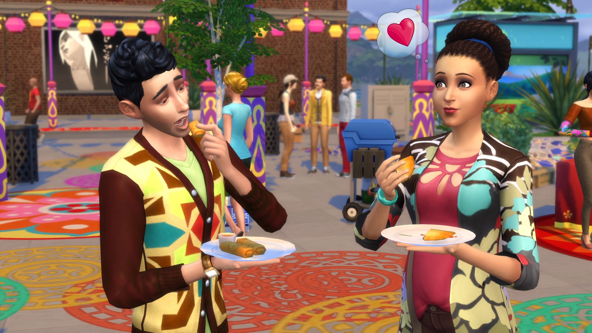

San Myshuno on a plate
I love how The Sims 4 lets you create people and take their lives in almost any direction. It's a life simulation game, and City Living is my favorite expansion pack! It brings your Sims to San Myshuno, a city full of festivals and food stalls. Exploring all that food is the part I get most excited about.
These are the dishes I most want to share, along with how to learn their recipes and a little help choosing what to try next.
Eat First, Cook Later
When your Sim eats a new dish from a city food stall, they learn its recipe and can cook it at home.

- Find a food stallVisit San Myshuno and see what's on the menu.
- Try something newOrder a dish and let your Sim eat it.
- Make it at homeLook for the newly learned recipe in your Sim's cooking menu.
Spice Tolerance
Some City Living dishes are spicy enough to make an unprepared Sim breathe fire. Eating spicy food helps Sims build a hidden tolerance over time.
Keep trying spicy dishes and your Sim can earn the Spice Hound trait. The Spice Festival's Curry Challenge is another reason to get some practice first.
All 27 Recipes
Curious about the rest? Here are all 27 City Living street-food recipes listed in EA's cooking guide, grouped into seven cuisines found at different food stalls around San Myshuno.
| Cuisine | Count | Recipes | Flavors & textures |
|---|---|---|---|
| Chinese | 4 recipes |
|
Crisp, silky and tender textures, with sweet-and-sour flavors and a little heat. |
| Filipino | 4 recipes |
|
Soft, fluffy and crisp textures, from gently sweet to rich and tangy. |
| Indian | 3 recipes |
|
Fragrant spices and warm, savory flavors, with creamy and crunchy textures. |
| Japanese | 4 recipes |
|
Savory umami and gentle sweetness, with springy, chewy and soft textures. |
| Mexican | 6 recipes |
|
Hearty, savory flavors, crisp edges and soft, rich centers. |
| Moroccan | 3 recipes |
|
Warm spices, deeply savory flavors and tender, juicy textures. |
| Vietnamese | 3 recipes |
|
Fresh herbs, bright flavors and a mix of crisp and tender textures. |
About the Author
About this avatar
Marie Simmons from The Sims 4: Parenthood. I think she looks a little like me!
Sophia Yang
I've been playing The Sims for ten years, and I love cooking just as much! I made this website to bring those two interests together and share my favorite part of City Living: the food. I hope you find something here you'd love to try.